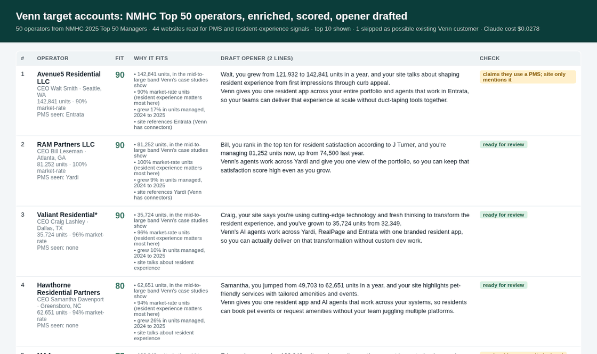

Built by Gursimar Singh, Nov 2026, on real public data

It starts from the NMHC 2025 Top 50 Managers list and reads each company's website for property software names and resident experience language. Each operator is scored on size, share of market rate units, unit growth from 2024 to 2025 and those website signals, then Claude drafts a 2 line opener for the top 10. A checker flags any number not in the source data and any claim the site doesn't back up; on this run it sent 6 of 10 openers back for a human rewrite. Avenue5 came out on top.
What I'd improve next: read each operator's resident portals, where the property software actually shows up, since only 7 of the 44 websites I could read named one.